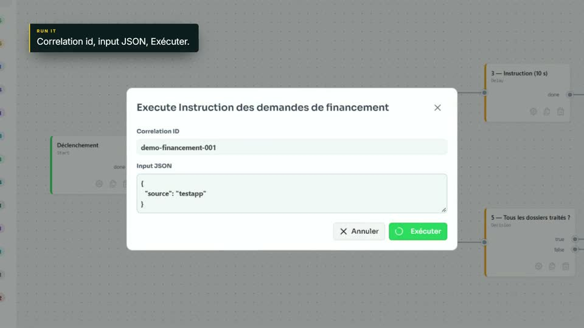
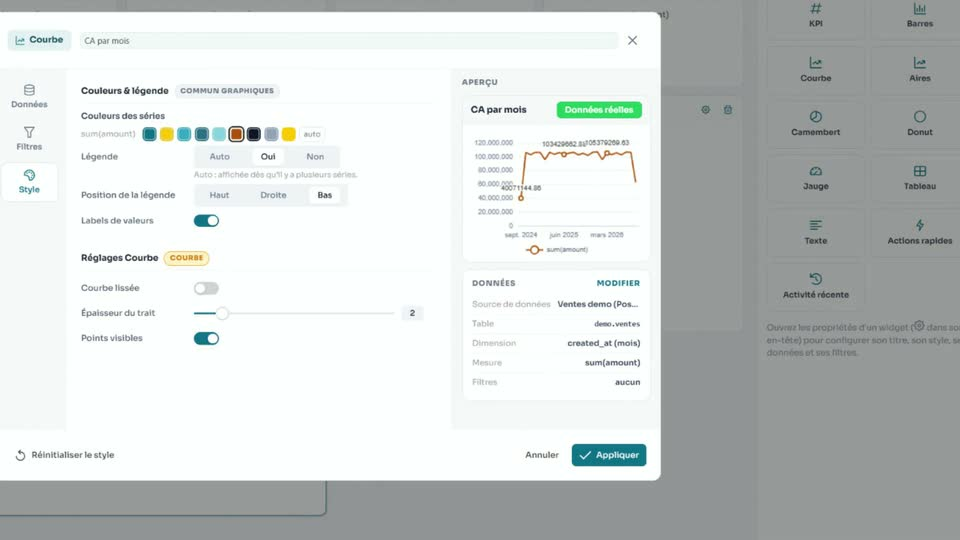
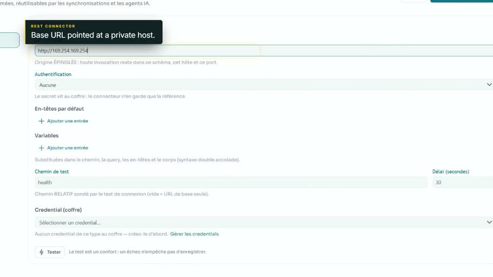

Elise.Studio
Nine business modules behind one console, with every request's tenant enforced four separate times — down to row-level security in PostgreSQL.
Overview
Nine business modules behind one console - eight mounted in the shell, the ninth a control-plane API - for enterprise customers who used to buy several of these as separate applications, NeoForm among them. The forms module is where NeoForm went next: the same builder carried onto .NET 10 inside a nine-module console, with the tenant boundary hardened from one check to four, the runtime script guard made configurable and an egress guard added around the connectors. Build a form by dragging fields onto a canvas and publish it to a link a stranger can open without an account. Draw a workflow as a graph and get every run traced back step by step with real timings. Compose dashboards whose aggregation is pushed down into PostgreSQL instead of being assembled in the API, read through a role that cannot bypass row-level security. Wire connectors to REST, SQL, storage and e-signature services with credentials held in a vault and never readable again. Underneath, every request's tenant is enforced four separate times, down to row-level security in PostgreSQL, and a conformance test goes red the moment a table ships without a policy.
Problem and objectives
Enterprise customers were buying forms, workflows, dashboards and documents as separate applications. Elise.Studio puts nine modules behind one console — which makes the tenant boundary the thing that can never fail.
- One console for forms, workflows, dashboards, documents and master data
- Tenant isolation that holds even if one layer has a bug
- Connectors to systems the platform does not control, without exposing the internal network
Architecture
Console
Vue 3 shell
Eight modules mounted in one shell; forms are built by dragging fields onto a canvas.
- Console Vue 3 shell — Eight modules mounted in one shell; forms are built by dragging fields onto a canvas.
- Gateway edge YARP — Grants a workspace only after confirming membership — one account, several organisations.
- Identity Keycloak · OIDC — Sign-in; one level plus a module perimeter per user instead of 27 roles.
- Modules .NET 10 · EF Core — Forms, workflows compiled to Elsa 3, dashboards, documents, master data, and a control-plane API.
- PostgreSQL FORCE RLS · NOBYPASSRLS — The fourth tenant check, inside the database; a conformance test fails if a table ships without a policy.
- Connectors REST · SQL · S3 · SMTP · DocuSign · MCP — Ten families, credentials held in a vault and never readable again.
- Egress guard DISCOVERY_EGRESS_BLOCKED — Private-network targets refused on resolved IPs before any socket opens.
Engineering challenges and decisions
- Forms built by drag-and-drop and published to anonymous links on a separate host
- Workflows drawn as a graph, compiled to Elsa 3, every run traced with real timings
- Private-network targets refused on resolved IPs before any socket opens — DISCOVERY_EGRESS_BLOCKED
- One account, several organisations — the edge grants a workspace only after confirming membership
SSRF filter
- The constraint
- Connectors have to reach customer systems — REST, SQL, storage and e-signature services we do not control.
- What I rejected
- Validating the URL.
- What I did
- A filter in the socket connect callback, refusing private-network targets on resolved IPs before any socket opens — closing the DNS-rebinding window.
- What it cost
- The check runs per connection, not once, and DISCOVERY_EGRESS_BLOCKED is a refusal a customer will occasionally see legitimately.
Technologies
Also in use: Docker, PostgreSQL.
My contribution
Full-stack engineer across the platform. Where I would point a reviewer first: authorization and tenancy, machine-key identity, and the gateway edge.
Screens
Stills from the demo film.



Results
- 9
- modules: eight in the shell, the ninth a control-plane API
- 4
- tenant checks per request: gateway, EF Core filters, a per-connection interceptor, FORCE RLS
- 31
- xUnit backend test projects
- 27 → 1
- identity-provider roles replaced by one level and a module perimeter per user